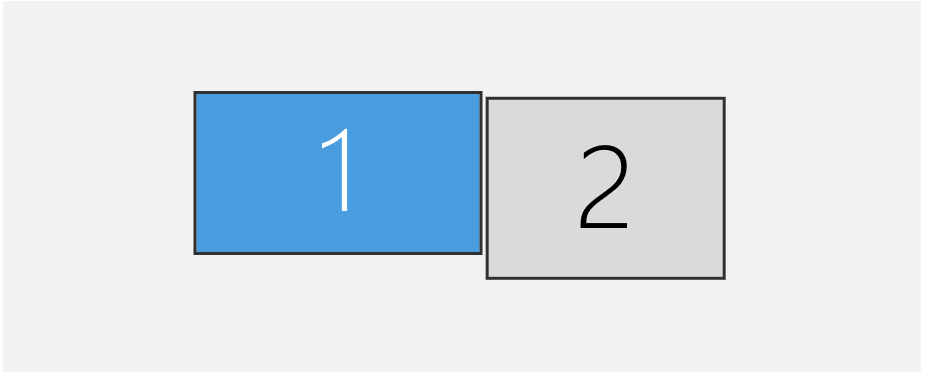
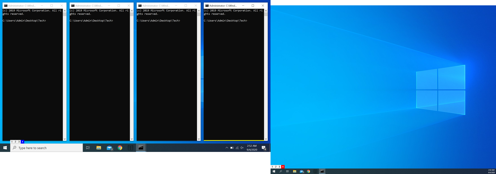
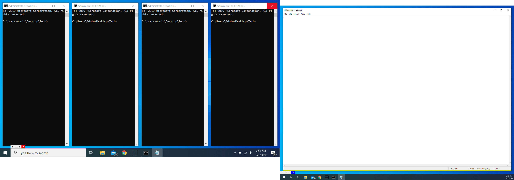

Multi-Monitor Workflow
This will be a little guide on understanding & optimizing the workflow on multi-monitor setups.
This is my current setup, monitor 1 is my primary display.

When you start WinWM on a multi-monitor setup, it creates a set of trees.
Trees can be though of like folders and directories. Each Workspace holds the same number of trees as displays.
- Workspaces
- Workspace 1
- Tree 1 (Display 1) <- Primary Display <- Focused Monitor
- Tree 2
- Workspace 2
- ..
- Workspace 9
When WinWM starts it performs an initial regrouping of all the windows, and it groups them into vertical splits. On a multi-monitor system, WinWM will perform the regrouping exactly the same except it only regroups to the primary display.

At the current moment WinWM has the primary display as the focused monitor, this is visible from the blue button on the status bar, which is the default color of the active-primary workspace button. On the other side, the second monitor has a red button, which signifies that it is not in focus.
By executing go_monitor_right (by default mod+m), we can change the the current focused monitor to the Display 2
The colors of the buttons on the status bar has changed. Display 2 now has a blue button on its status bar, showing that it is now in focus.
if we create a new window then it will place itself in display 2

each workspace starts off with the primary display as the active monitor, and each workspace remembers the monitor in focus.
you can move windows across monitors in a workspace by executing the actions
move_monitor_left(by defaultmod+shift+m)move_monitor_right(by defaultmod+shift+n)